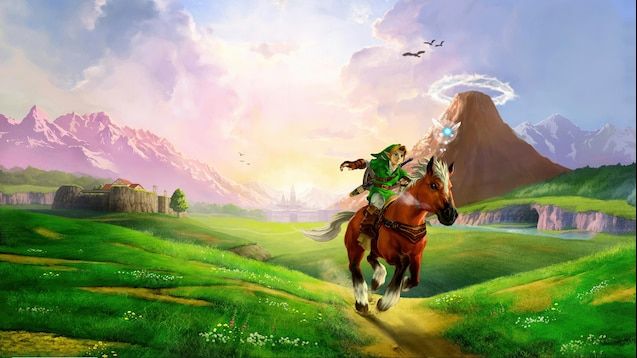

nintendo 1986-2025
UM POUCO SOBRE THE LEGEND OF ZELDA

THE LEGEND OF ZELDA (ZERUDA NO DENSETSU) E UMA SERIE DE JOGOS ELETRONICOS DE ACAO-AVENTURA COM ALGUNS ELEMENTOS DE RPG, CRIADA PELA NINTENDO EM 1986 POR SHIGERU MIYAMOTO E TAKASHI TEZUKA EXCLUSIVAMENTE PARA OS CONSOLES DA NINTENDO. A MAIORIA DE SEUS TITULOS SAO PRODUZIDOS E PUBLICADOS PELA NINTENDO COM ALGUNS JOGOS PORTATEIS E RELANCAMENTOS SENDO TERCEIRIZADOS PELA FLAGSHIP, VANPOOL, GREZZO E TANTALUS MEDIA. OS JOGOS DA SERIE SE PASSAM NO REINO DE HYRULE, NUM CENARIO DE FANTASIA. A FRANQUIA CONCENTRA-SE EM TITULOS FOCADOS NO GENERO ACAO E AVENTURA, ALEM DE RPG DE ACAO E COM RESOLUCSAO DE QUEBRA-CABECAS.
DEZENVOLVIMENTO DE ZELDA ENTRE 1986 ATE 2025
APERTE PARA SEGUIR PARA PAGINA 2